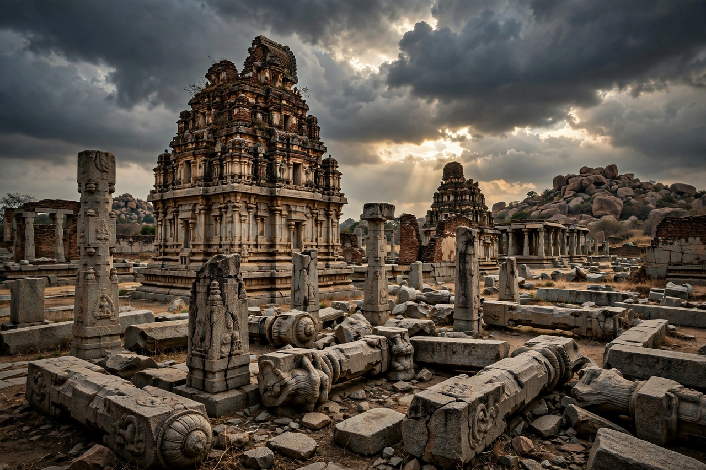

| Battle of Talikota | |
|---|---|
| Date | 23 January 1565 |
| Location | Near Talikota, Deccan (modern Karnataka) |
| Result | Decisive Deccan Sultanates victory |
| Belligerents | Vijayanagara Empire vs. alliance of Bijapur, Ahmadnagar, Golconda and Bidar |
| Commanders | Aliya Rama Raya (killed); Ali Adil Shah I, Hussain Nizam Shah I, Ibrahim Qutb Shah |

The Battle of Talikota (23 January 1565) was a watershed battle fought between the Vijayanagara Empire and an alliance of the Deccan sultanates. The rout of the Vijayanagara army and the capture and execution of its regent, Aliya Rama Raya, led to the sack and ruin of the imperial capital and the collapse of the last great Hindu empire of South India.
For decades Vijayanagara, under Rama Raya's direction, had played the sultanates against one another, intervening in their wars and raiding their territory. By 1564 the four sultanates of Bijapur, Ahmadnagar, Golconda and Bidar had overcome their rivalries — sealing alliances with marriages — and combined against their common enemy. Their armies met the Vijayanagara host south of the Krishna River, near the villages of Rakkasagi and Tangadigi, close to the town of Talikota.
Accounts differ in detail, but the decisive moment came when the elderly Rama Raya, directing the battle from a litter, was captured — in many accounts after his bearer stumbled or his elephant was startled — and brought before Hussain Nizam Shah, who had him beheaded on the spot. The sight of their leader's head on a pike threw the Vijayanagara army into panic and general rout; casualties among the fleeing troops were enormous.
The victorious sultanates marched on Vijayanagara and sacked the capital over several months, destroying temples and palaces; the city never recovered, its ruins surviving at Hampi. The empire lingered in reduced form under the Aravidu dynasty at Penukonda and Chandragiri, but South India's balance of power had permanently shifted, and within a century the sultanates themselves fell to the Mughals.
See also: Hampi · Krishnadevaraya